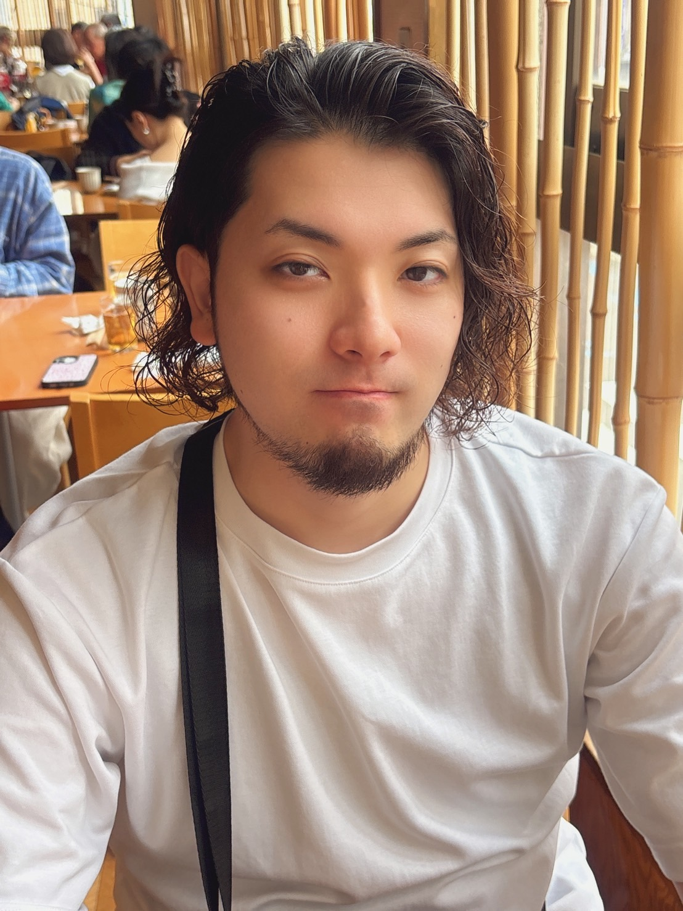

田中 純大
Tanaka Jundai | 1999年生まれ、福島県出身
幼少期よりアニメ・ゲーム・工作に熱中し、理想の世界を形にすることへの没頭がデザインの原点。製造業での品質管理を経てクリエイティブ分野へ転身し、現在は広告代理店にて月100本超のバナー制作を担当するWEBデザイナーです。

01 — Profile
経歴とスキル
私について
デザイナーとしての制作経験と、前職で培ったプロセス管理・品質安定化の思考を土台に、 UX／UI視点を持ちながらプロジェクト全体をディレクションできる人材へのステップアップを目指しています。 「作って終わり」ではなく、データと対話しながら継続的に改善し、 ビジネス目標に直結するクリエイティブを生み出すことが目標です。
幼少期から好奇心の赴くまま理想の世界を形にすることに没頭してきた経験が、 ターゲットに刺さる世界観を構築するデザインの礎になっています。
高校卒業後は製造業の品質管理職に従事。工程ごとの品質チェックとPDCAサイクルによる改善習慣を身につけました。 この「手戻りを出さないプロセス管理の思考」は、現在の制作でのコンセプトアートによる事前すり合わせや、 データに基づく改善提案に直接活きています。
2022年より業務委託での制作活動をスタートし、現在は広告代理店にて月100本を超えるバナー制作を担当。 単なる制作にとどまらず、制作フローの効率化や改善提案を自発的に行い、 チーム全体のパフォーマンス向上にも寄与してきました。
視覚的な強弱を活かしたタイポグラフィと情報の簡略化を強みとし、 限られたスペースで視認性と訴求力を両立させたレイアウトを 迅速に構成することが得意です。
Career Timeline
PDCAサイクル・工程管理を習得
Photoshop・映像制作を独学
月100本超のバナー制作を担当
| スキル・経験 | 実績・内容 |
|---|---|
| バナー制作 Photoshop 約4年 |
広告代理店にて飲食ポータルサイトの広告バナーを担当・月100本超。求人媒体「体入ショコラ」向けサンプルバナーを自主制作・提供（現職） |
| 映像編集 After Effects・Premiere Pro 約1年 |
MV 2本・配信演出映像 1本、合計3件 |
| クライアント対応 | 要望のヒアリング・コンセプトアートによる認識合わせを実践（映像制作案件） |
| Live2D | 基本操作・1案件 |